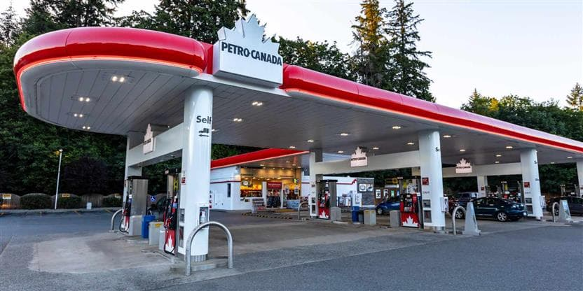
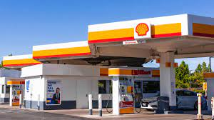

Despite Canadians in the country’s interior noticing lower prices than their coastal counterparts, the price of crude oil is currently trading for just over US$93 a barrel, Dr. Werner Antweiler, economics professor at the University of British Columbia’s Sauder’s School of Business, told Global News.
This is the highest it’s been since 2014, he noted. With high demand and low supply, the concern of Russia, a major supplier of oil, curtailing shipments in response to imposed sanctions because of its ongoing clash with Ukraine, doesn’t make things any better.
When buying a gallon of gas, the money goes towards the cost of the crude oil, refining, distribution and marketing, and taxes. The cost of crude oil accounts for more than half of what the consumer pays for at gas stations. However, this wasn’t the case during the first few months of the pandemic when the cost of crude oil dropped to just 25% of what the consumer paid.
The rising gas prices in 2021 are due to the increased demand for crude oil after significantly dropping during the COVID-19 pandemic. As summer 2021 approached, gas prices were expected to increase as peak travel season came back. However, a ransomware attack on the Colonial Pipeline on May 7 forced the company to halt all operations, thus starting a fuel shortage that was impacted by both the supply chain and by consumers. After six days of being offline, pipeline operations resumed on May 12 but the national average for gas prices still surpassed $3 with over 10,000 gas stations out of gas after panic buying and delayed distributions. The cyber attack caused gas prices to jump up sooner than expected, and it has remained above the $3 mark past the Fourth of July.